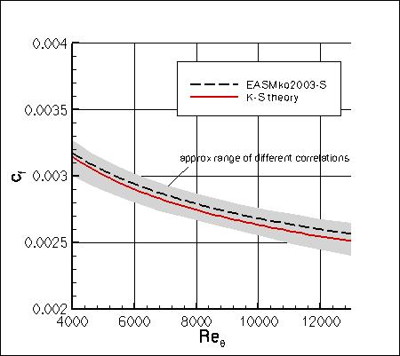
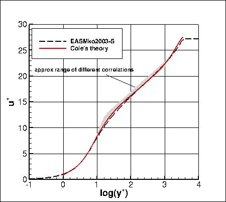

|
Langley Research CenterTurbulence Modeling Resource |
Jump to: SA Results, SSTm Results, SST-Vm Results, BSLm Results, SSG/LRR-RSM-w2012 Results, Wilcox2006-klim-m Results, K-kL-MEAH2015m Results, K-e-Rt Results, GLVY-RSM-2012 Results
Return to: Flat Plate Validation Intro Page
Return to: Turbulence Modeling Resource Home Page
2D Zero Pressure Gradient Flat Plate Validation Case
EASMko2003-S Model Results
Link to EASMko2003-S equations


Above EASMko2003-S results are from CFL3D on the 545x385 grid.
CFL3D used freestream turbulence intensity=0.039% and freestream turbulent viscosity (relative to laminar)=0.009
(additional details can be found in the CFL3D User's Manual, Appendix H).
Please read note 5 on Notes on running CFD page.
The right-hand plot is extracted from the location where Retheta=10000.
Note that these are compressible code results
at "essentially incompressible" conditions of M=0.2.
There may be a very small influence of compressibility.
The CFD postprocessed data files are given here for reference:
easmko-cf_cfl3d.dat and
easmko-upyp_cfl3d.dat.
Note that this model is currently assigned
MRR Level 1 for the purposes of this website.
This is because at this time the TMBWG has results for this model
from only one code. The results on this page are therefore not necessarily
reliable until additional independent code(s) can be used to verify the model implementation.
Jump to: SA Results,
SSTm Results,
SST-Vm Results,
BSLm Results,
SSG/LRR-RSM-w2012 Results,
Wilcox2006-klim-m Results,
K-kL-MEAH2015m Results,
K-e-Rt Results,
GLVY-RSM-2012 Results Return to: Flat Plate Validation Intro Page Return to: Turbulence Modeling Resource Home Page
Responsible NASA Official:
Ethan Vogel
Page Curator:
Clark Pederson
Last Updated: 03/24/2021